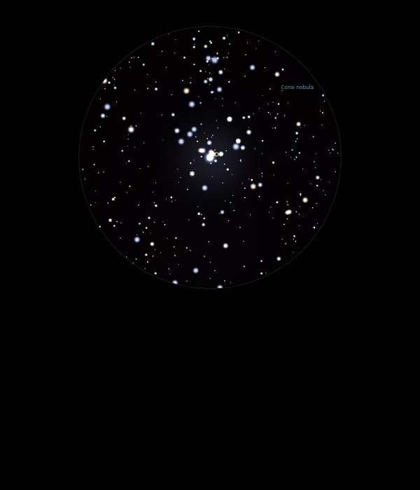

NGC 2264
Open
Cluster and Emission Nebula in Monoceros
NGC 2264
Mag 3.9
The Christmas Tree Cluster and Cone Nebula
24/01/15
Fantastic Cluster in 25mm
15 Mon (s Mon) at Mag 4.65 marks the pot of the
Christmas Tree and is much brighter than the rest of the Cluster,
which are like tiny white lights on the tree with a
slightly brighter star at Mag 7.15 at the top
In 25mm really
bright nebulosity
around 15 Mon with dark lanes apparent
Cluster fits
perfectly in 18mm and is so sharp, every star a
perfect pinprick although the nebulosity is much
less evident!
In 12mm
with UHC filter some structure to the nebulosity
can be seen, and is there just a hint with
inverted vision of a notch where The Cone Nebula
lies?
24/02/17
Perfect
in 20mm where the 'Christmas Tree' fits the
FOV perfectly
At
it's base and really bright is 15 Mon, S Mon,
Hip 31978 at Mag 4.65 and around
which is a patch of really bright nebula
The star on the top
of the tree is formed by
a star of Mag 7.15 and the classic
shape is created by
a fairly uniform set of
magnitudes, what a fantastic
FOV!